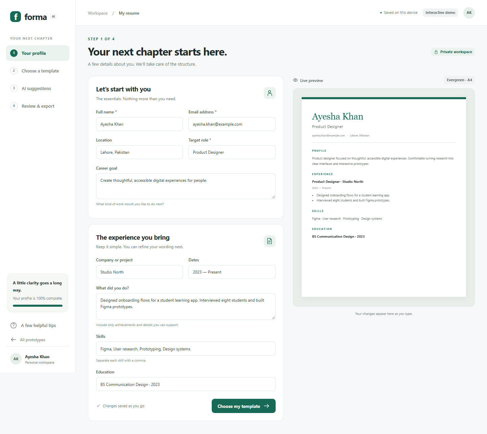
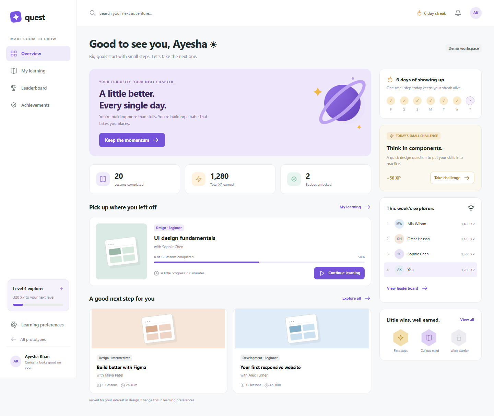

DESIGN & INTERACTION HANDOFF
Forma + Quest.
Ready to explore.
Two working product prototypes, an editable Figma generator, and a clear path through each experience.
Start in your browser
Open index.html in Chrome or Edge. No account, server, or installation is needed. Both interfaces adapt to desktop and mobile widths. Sample data saves locally in your browser; each app has a reset option.
Forma / AI resume builder

- Edit your name, experience, skills, and career goal. Watch the resume preview update.
- Choose Evergreen, Editorial, or Studio and select an accent color.
- Generate suggestions, apply an improvement, and try undo.
- Review the resume and download a real PDF or DOCX file.
Quest / Gamified learning

- Continue a lesson and mark it complete to earn 100 XP.
- Try the daily challenge. A correct answer earns 50 XP once per day.
- See your progress, streak, badges, and leaderboard position update.
- Search courses, enroll, and change interests to see different recommendations.
AI suggestions use local demo logic. No AI service is connected. Learners, initial progress, and the starting streak are sample data. Resume downloads are functional.
Create the editable Figma prototype
The included development plugin generates native frames, editable text, Auto Layout, component variants, and prototype connections in a new page. It does not require a paid API or network access.
- Extract the project ZIP, then open a new Figma Design file in the Figma desktop app.
- Right-click the canvas and choose Plugins → Development → Import plugin from manifest. Depending on the app version, the first menu may say “Select plugins.”
- Select
figma-plugin/manifest.jsonfrom the extracted folder. - Run Forma + Quest — Editable UI Prototypes from the Development or Actions menu. Allow a moment for the frames to appear.
- Open Present and choose Forma · Build a resume or Quest · Your learning journey. Use Figma’s Share controls when you are ready to submit the file or prototype.
These import steps follow Figma’s plugin testing instructions. The generator uses native prototype reactions and Smart Animate transitions.
A native Figma file has not been created in your account. The generator passes TypeScript and structural checks, but has not been executed inside Figma here. Figma interactions use prepared screen states; text input and actual downloads work in the browser prototypes. The two mobile Figma frames are entry screens that link into the desktop flows.
What is in the Figma file?
| Area | Included screens and behavior |
|---|---|
| Forma · 8 screens | Profile, three template states, suggestions, applied suggestions, review/export, and export confirmation. |
| Quest · 10 screens | Dashboard, course library, lesson, daily challenge, lesson reward, leaderboard, achievements, updated dashboard, wrong-answer feedback, and challenge reward. |
| Mobile · 2 screens | 390 px profile and learning dashboard entry points. |
| Components | Buttons: product × primary/secondary × default/hover/disabled. Inputs: default/focus/error/multiline. Badges: unlocked/locked. |
| Layout & motion | Auto Layout rows, columns, cards, and buttons. 300 ms Ease Out Smart Animate. Four named flow starting points. |
Desktop screens are 1440 px wide. Native inputs remain editable design layers; Figma Present follows the connected sample states. Hover button variants demonstrate component interaction.
Design foundations
Forma
Forest green #176B56, soft green #EAF3EE, and a neutral workspace. The editor and document sit side by side to make changes easy to understand.
Quest
Purple #7553D8, soft lavender #F0EBFB, and warm reward accents. Progress is visible before secondary discovery features.
| Typography | Inter in Figma; system sans-serif in the browser. 11–32 px UI scale. |
|---|---|
| Spacing | 4, 8, 12, 16, 24, and 32 px rhythm. |
| Shape | 8–16 px corner radius; subtle borders and restrained shadows. |
| Feedback | Validation, generation loading, success messages, undo, empty search results, wrong-answer retry, earned/locked badges. |
| Accessibility basics | Labeled form fields, keyboard controls, visible focus treatment, text feedback alongside color, and responsive layouts. |
Files and checks
resume.html and learn.html are the live demos. figma-plugin/ contains the compiled generator and editable TypeScript source. previews/ contains screenshots. Local export libraries and licenses are in vendor/.
Browser checks passed for editing, validation, template/color selection, suggestions with undo, actual PDF/DOCX exports, saved state, challenge rewards, lesson progress, course search, preferences, and mobile menus at 390 px and 320 px. No JavaScript page errors were recorded.
For development, run npm ci, npm run figma:build, npm run test:figma, and npm run test:browser. The browser test uses the installed Windows Chrome; adjust its executable path for another environment. Structural Figma checks use a mock API and do not validate native rendering.
Included records: browser validation and Figma structural validation.